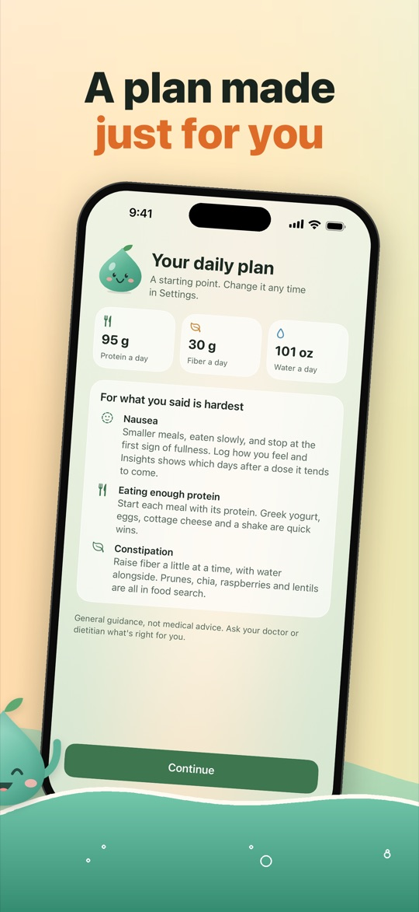
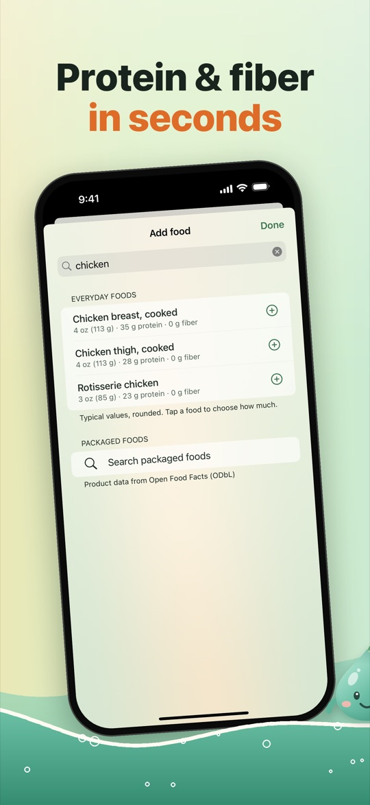
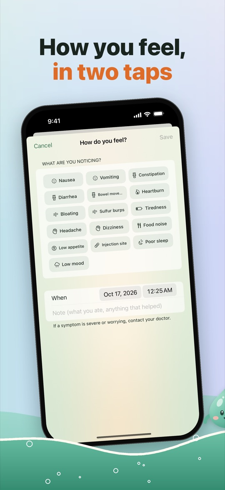
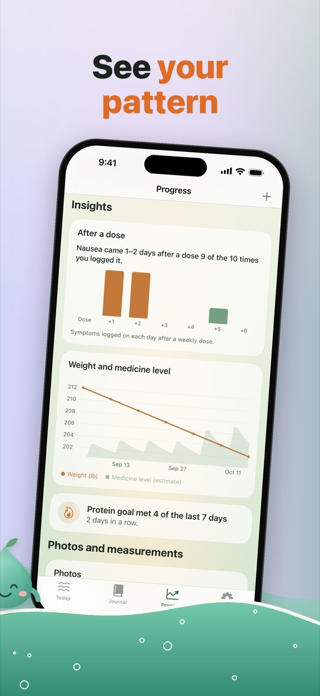
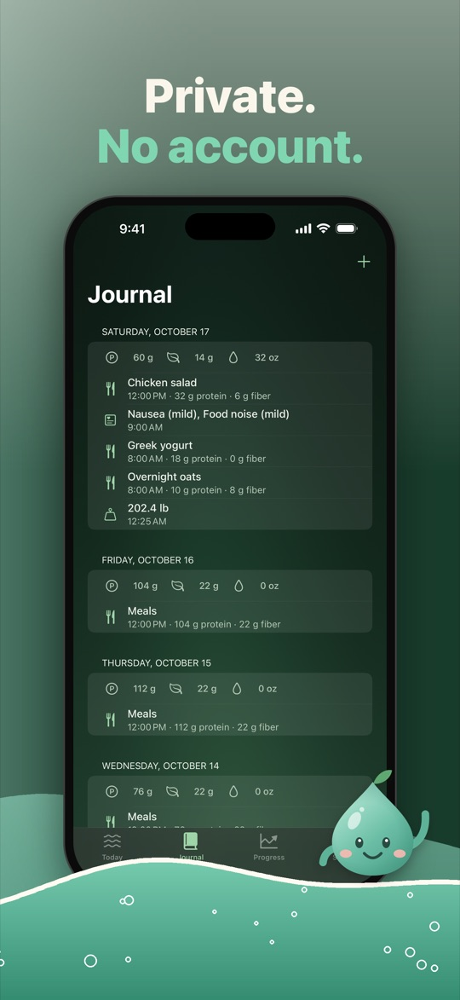

Your GLP-1 week, made gentle: every shot, protein and water in one place.
Glipsy is a free iPhone tracker for people taking a weekly GLP-1 shot or a daily pill, such as semaglutide or tirzepatide. Log a dose in two taps, rotate injection sites, hit simple protein, fiber and water goals, and watch Glip's garden grow with every day you log.





What Glipsy does
Every dose, remembered
- Log a shot or pill in two taps, with a reminder on dose day
- Injection site rotation on a body map: Glipsy suggests the spot you used longest ago
- Weekly shots, daily pills and more than one medicine
- Count your pens or pills and get a reminder when about a week is left
Protein, fiber and water
- A daily plan to start from, with tips for nausea, constipation, food noise and keeping muscle
- Search everyday foods, or scan a barcode or nutrition label
- Glipsy counts protein and fiber, not calories
- Water by the glass, from the app or a widget
How you feel
- Nausea, constipation, tiredness, food noise and more, with how bad
- Patterns across your dose week, and weight from Apple Health or logged in Glipsy
- A doctor report to share or print before your appointment
Glip's garden
- Every dose you log and every goal day grows a garden, from a seed to a meadow
- Milestones bring new friends: a ladybug, a bird, a rainbow, fireflies
- On your Home Screen and Lock Screen, with Siri and Control Center shortcuts
Price
Doses, reminders, injection sites, food search with 3 scans a day, water, symptoms, weight and the weekly recap are free, for good. Glipsy Pro adds unlimited scans, deeper insights, the doctor report, progress photos and themes: $29.99 a year with a 7-day free trial, or $9.99 a month (US prices).
Privacy
No account, no ads, no tracking. Your log stays on your iPhone. Only a barcode number or a typed food name is sent, to Open Food Facts, to look up a packaged food. Privacy Policy
Questions
What is a good app to track GLP-1 shots on iPhone?
Glipsy logs weekly GLP-1 shots and daily pills in two taps, reminds you on dose day, rotates injection sites on a body map, and keeps protein, fiber and water goals in the same place. The core tracker is free, with no account.
Does Glipsy work with semaglutide and tirzepatide?
Yes. Glipsy works with weekly semaglutide and tirzepatide shots, daily GLP-1 pills, and more than one medicine at a time. You log the dose exactly as prescribed; Glipsy never suggests a dose.
How do I keep track of injection sites?
Each time you log a shot, Glipsy shows a body map and suggests the site you used longest ago, so you rotate without having to remember.
How much protein should I eat on a GLP-1?
Glipsy gives a starting daily protein, fiber and water goal from a few questions, based on published guidance, and you can change it any time. Ask your doctor or dietitian what is right for you.
Is Glipsy free?
Yes. Doses, reminders, injection sites, food search, water, symptoms and weight are free for good. Glipsy Pro ($29.99 a year with a 7-day free trial, or $9.99 a month in the US) adds deeper insights, the doctor report, progress photos and themes.
Is Glipsy medical advice?
No. Glipsy is a personal log. It never suggests a dose. Always follow your prescriber's instructions. Its sources are listed at wicklightlabs.com/glipsy/sources/.